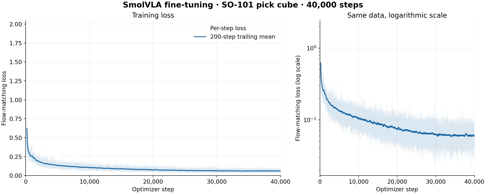
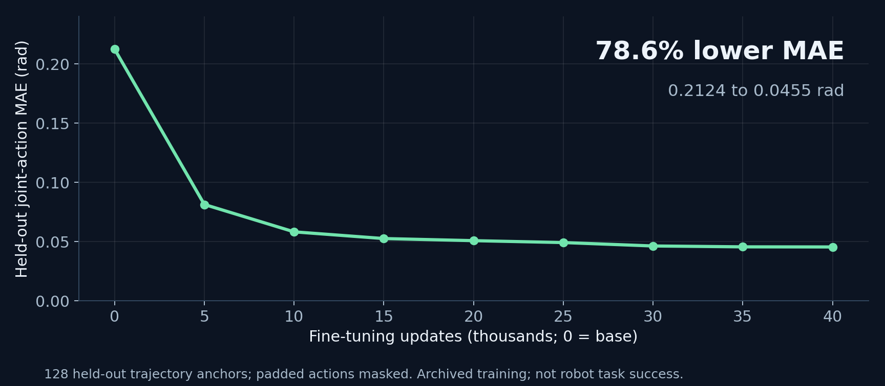
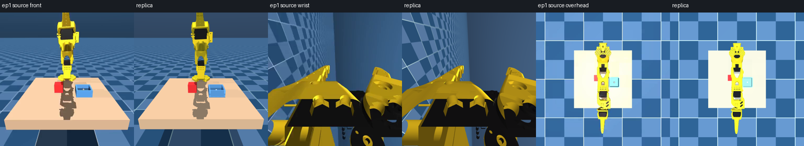
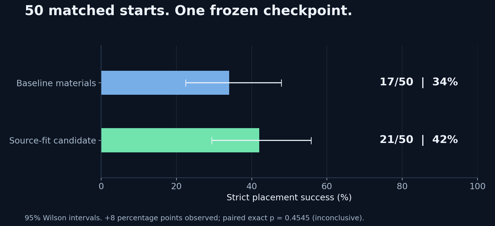
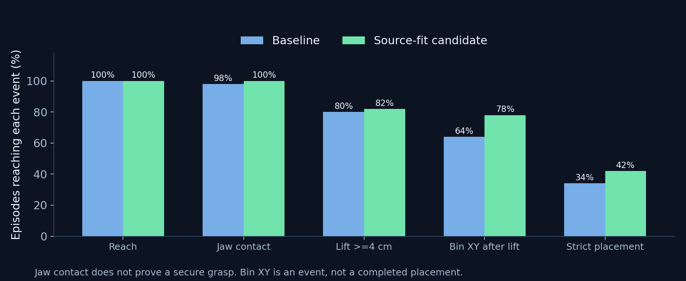

Overview
Task and setup
The SO-101 arm must pick up a red cube and place it in a blue bin. This write-up covers the dataset repairs, fine-tuning run, inference setup and simulation results.
The policy receives three RGB images, six joint angles and a language instruction, and predicts absolute joint targets. Evaluation checks approach, contact, lift, transport, release and stable placement.
I used SmolVLA, the public GPU-DAD SO-101 dataset and an attributed Rovo Labs MuJoCo replica. The integration includes timestamp repairs, a grouped validation split, action-expert fine-tuning, named joint and camera mappings, and per-trial diagnostics. The model architecture, demonstrations and robot meshes come from those open-source projects.
Offline prediction improved substantially. In the main simulation comparison, the frozen model completed 17/50 placements with upstream materials and 21/50 with a source-fitted material candidate. That difference is inconclusive. The stage metrics show a large gap between reaching the bin and completing a stable placement.
Simulation demo
61 seconds, with on-screen captions and no audio. Includes a completed placement, a matched-start comparison, a failure and aggregate metrics. Videos rerender saved MuJoCo states; playback follows simulation time and does not demonstrate real-time hardware inference.
Repairing the dataset
The source dataset contains 10,993 episodes at 30 Hz, with front, wrist and overhead cameras. Before fine-tuning, the audit exposed timestamp and camera alignment problems, dummy reset actions and repeated joint trajectories.
- Repair time and alignment. Use episode-relative sample timestamps; correct the wrist stream’s 301-frame offset after source episode 2672. Quarantine source episodes 232 and 2672.
- Remove misleading targets. Drop the known dummy zero-action first record in each retained episode. Keep the source video files unchanged.
- Split by trajectory group. Keep exact state/action duplicates together, then compute numeric normalization from training frames only.
Repaired corpus: 10,991 episodes / 1,445,747 frames. Split: 1,301,369 training frames and 144,378 validation frames. Grouping prevents exact numeric-trajectory overlap; it does not certify independence of every visual scene or task condition. Alignment checks covered all reset starts and 120 duplicate-trajectory interior comparisons, rather than every video frame.
Inspect: repair record in the repository · episode split
Fine-tuning and checkpoint selection
Starting from lerobot/smolvla_base, the training run adapted the action expert while freezing the vision encoder. SmolVLA conditions continuous action-chunk predictions on image, language and robot-state features. Its flow-matching objective trains the action expert to recover action trajectories from noisy samples.
| Optimizer updates / batch | 40,000 / 32 |
|---|---|
| Optimizer / initial learning rate | AdamW / 1 × 10⁻⁴ |
| Warmup / decay schedule | 1,000 / 40,000 steps |
| Action chunk | 50 targets × 6 joints |
| Precision | BF16 through Accelerate |
| Saved checkpoints | Every 5,000 steps; eight in total |
| Training workstation | Threadripper PRO + RTX 6000 Ada 48 GB |
| Inference GPU | RTX 3060 laptop GPU, 6 GB |
| Training elapsed time | Approximately 16 h 3 min |

Held-out checkpoint evaluation
Evaluation used 128 distinct held-out trajectory anchors, 50-step action chunks and masked padding. Action MAE fell from 0.2124 rad to 0.0455 rad: a 78.6% relative reduction in prediction error.

Inspect every checkpoint
| Update | Action MAE, rad | Flow loss |
|---|---|---|
| Base | 0.212416 | 1.114065 |
| 5,000 | 0.081324 | 0.147876 |
| 10,000 | 0.058235 | 0.108189 |
| 15,000 | 0.052572 | 0.095241 |
| 20,000 | 0.050792 | 0.087689 |
| 25,000 | 0.049198 | 0.077426 |
| 30,000 | 0.046308 | 0.081273 |
| 35,000 | 0.045571 | 0.077684 |
| 40,000 | 0.045478 | 0.077250 |
An early reconstruction scored 0/20 for every checkpoint and 0/50 in its final test. The 40k checkpoint was selected using the predeclared offline-error tie-breaker. Later scene and reset changes mean those zero-success runs cannot be treated as a controlled before/after comparison with the current replica.
Fine-tuning ran on a Threadripper PRO workstation with an RTX 6000 Ada 48 GB. Inference and evaluation ran locally on the RTX 3060 6 GB. The public repository includes training records and scripts; model weights and the full corpus are not bundled.
Closed-loop inference
6 joint angles + instruction
50 absolute joint targets
17 physics substeps per target
The instruction is fixed: pick up the object and place it in the target location
. Front, wrist and overhead observations map to the policy’s camera1, camera2 and camera3 inputs. Joint order is mapped by name, with absolute target angles in radians.
A single MuJoCo model owns physics. Its state is mirrored to the other two camera-specific appearance models. Physics runs at 500 Hz; 17 substeps give a 34 ms control interval, approximately 29.4 Hz. Cube motion follows simulated contact, with the replica’s disclosed 2.5 mm finger pads.

The frozen policy ran on a 6 GB RTX 3060 laptop GPU in BF16. Peak recorded PyTorch allocation was about 1,237 MiB; that excludes OpenGL and is not total GPU usage. Simulation waits during inference, so nominal simulation frequency is not a claim of real-time robot operation.
Placement results
The material study kept model weights fixed and used the same 50 starting seeds across two material profiles and two rendering settings: 200 policy rollouts. The candidate was fixed using source episode 1 image similarity before these outcome trials. It changes material parameters while retaining scene geometry, masses and actuators.

Change the rendering condition
Original appearance: paired p = 0.4545. Material improvement remains inconclusive.

What counts as a successful placement?
- A prior cube lift of at least 4 cm.
- All rotated cube corners inside the bin in XY, allowing 0.1 mm numerical wall-contact tolerance.
- Cube bottom compatible with bin-floor height; this is a geometric support proxy.
- No remaining cube contact with the robot.
- Linear speed below 0.03 m/s and angular speed below 0.4 rad/s, sustained for 15 control steps.
Inspect: experiment plan · 100 main-trial outcomes · paired statistics · MSAA-0 comparison
Failures and diagnostics
The clips below show a successful trial, its paired baseline and two failure modes. Each rerenders the full sampled episode from saved physical states using all three cameras.
Numerical tolerance in the placement metric
The original zero-tolerance containment check rejected micrometre-scale wall penetrations that MuJoCo permits during soft contact. An audit exactly replayed 100 saved action sequences, first reproducing their physical states and old outcomes, then applying a 0.1 mm horizontal tolerance. One 40k batch changed from 13/50 to 17/50 without changing behaviour. That is a measurement correction, not a better controller. Read the audit.
Rendering sensitivity
With multisampling enabled, repeated resets sometimes differed by one RGB intensity level in a few pixels. Identical processed inputs and noise produced identical predictions, but those image differences could change BF16 actions. Disabling multisampling produced exact same-process action/state repetition in the tested rollout, alongside lower observed success in the material study. Independent-process and cross-hardware reproduction remain untested. Inspect rendering checks.
Limits of source matching
The material fit improved mean cube-mask overlap on source episode 1 from 0.2061 to 0.5753. Other source-action replays remained mixed. Occluded starting positions and uncertain controller dynamics limit what one successful replay can establish. This is a replica-based investigation, not a recovered original benchmark. Inspect the frozen material selection.
Remaining work
The next research step is a fresh, larger evaluation after changes have been fixed, alongside better source-alignment checks. A useful controller needs consistent release and recovery as well as a good approach trajectory.
Code, logs and videos
Explore the implementation, run records and successful and failed trials. The main comparison includes all 100 physical traces; the additional rendering comparison includes all outcome records.
Scope and limitations
This work demonstrates simulation inference, not physical-robot operation or deployment at a guaranteed wall-clock frequency. The original simulator is unavailable. Candidate material selection used one source episode; the observed material difference is statistically inconclusive. The 50 seeds are distinct from earlier selection probes, but the simulation study remains an exploratory development result rather than a recovered, externally validated benchmark.
Weights and the training corpus are not part of this repository. Supplied checkpoint identity, runtime versions and source pins support later reproduction, but software changes and rendering sensitivity may affect exact trajectories.